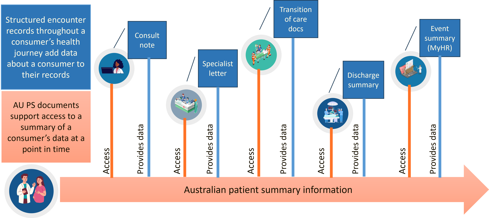
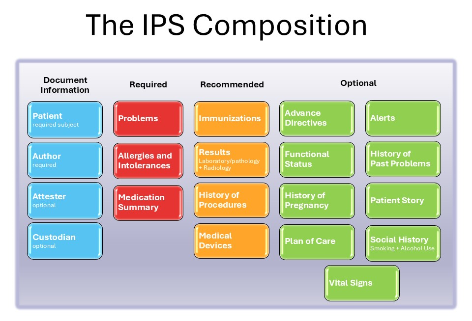
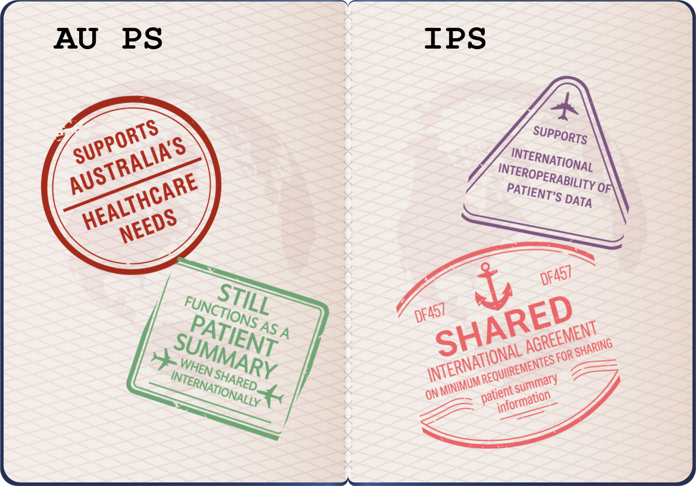

AU Patient Summary Implementation Guide
1.0.0-ci-build - CI Build

AU Patient Summary Implementation Guide
1.0.0-ci-build - CI Build

This page is part of the AU Patient Summary (v1.0.0-ci-build: R1) based on FHIR (HL7® FHIR® Standard) R4. The current version which supersedes this version is the current version. For a full list of available versions, see the Directory of published versions
| Page standards status: Informative |
The content on this page is intended to address the need for jurisdictional patient summaries to (a) clarify whether they are based on the IPS and if they are (b) make it clear that their IPS summaries are proper IPS and (c) a reference to a section that describes the functional limitations of receiving an IPS document that does not conform to national expectations e.g. what is intended to happen or a possible problem if you are processing IPS documents that don't conform to the national specification.
A patient summary is a standardised collection of patient information. Rather than an entire patient health record, it is the minimum necessary and sufficient data to ensure safe patient care. Patient summaries can enhance patient safety by ensuring critical information is readily accessible when it’s needed most and enables clinicians across different health sectors and health domains to provide more informed, consistent care.
The HL7 International Patient Summary FHIR Implementation Guide (the IPS) is an internationally recognised patient summary specification that is an implementation of the ISO 27269:2021 Health informatics — International patient summary standard. In 2021, the G7 nations committed to working towards the adoption of the IPS with several international efforts currently underway to drive adoption, including the European Union, USA, Canada and New Zealand. Multinational vendors with presence in Australia are at various stages of implementation of the IPS.
The AU PS will support the consumer on their healthcare journey, providing the consumer and their healthcare providers with timely and current access to relevant health information. It will provide a future pathway for individuals to share their healthcare information when travelling internationally.

Figure 1: Context of AU PS across a Consumer's Healthcare Journey in Australia
A sample set of Consumer Journeys, developed by the Sparked AU Patient Summary Clinical Focus Group, help illustrate the interactions and use of a patient summary during a consumer’s healthcare journey in the Australian healthcare context. These Consumer Journeys have been used to develop two example use cases to assist implementers in understanding how AU PS could be implemented.
AU PS is specified in this guide as an HL7 FHIR document (a Bundle including a Composition), composed by a set of potentially reusable "minimal" data blocks (the AU PS profiles).
Based on IPS and AU Core, AU PS defines a patient summary in the context of providing information to downstream providers. While profiled sections can have content that reflect intentions or orders of clinical care, the patient summary is meant as an informative document and is not intended to be directly actionable. For example, a MedicationRequest resource in the Medication Summary section or a CarePlan resource in the Plan of Care section, is not intended to provide authorisation for fulfilment or actioning from the AU PS (or IPS) document.
The AU PS Document shares the same structure as an IPS, shown below.

Figure 2: The IPS composition (source: IPS 2.0.0)
In the AU PS document:
See the description of each defined section in IPS Sections description.
The AU PS is based on IPS and AU Core, allowing for localisations required to meet Australian requirements while still ensuring alignment to the IPS specification:

Figure 3: The AU PS - a valid AU PS document is a valid IPS document
While AU PS has no variance (i.e. fully compliant) from IPS Implementation Guide 2.0.0, AU PS does impose requirements additional to IPS to support requirements in the Australian healthcare context (these primarily come from AUCDI and AU Core). These additional requirements are intentionally limited to maximise interoperability with IPS-aware systems. See Comparison with other national and international IGs and Relationship with other IGs for information on the national and international standards context of AU PS.
Additional requirements for the Australian healthcare context include:
A summary of these additional requirements is provided in the sections below. While every effort has been made to ensure this page is consistent with the requirements of AU PS this is not a normative part of the specification.
AU PS profiles the following resources that are not profiled in IPS:
In addition to the profiles defined in this implementation guide and in IPS, the following profiles defined elsewhere are used by AU PS as the target of a Must Support reference element in an AU PS profile:
No extensions are labelled as Must Support in IPS. In AU PS, the following extensions are labelled as Must Support:
A full list of terminology differences is not provided, refer to the AU PS profiles and the Terminology page to understand the terminology supported for use in AU PS. Some differences are mentioned below to highlight their potential relevance to implementers of the AU PS.
AU PS:
In many cases the difference between value sets bound in AU Core and IPS is the IPS use of international SNOMED CT concepts versus the AU Core use of SNOMED CT-AU concepts and international SNOMED CT concepts. Typically these Australian value sets are bound as preferred in AU PS profiles; these are recommendations for use in the Australian healthcare context but do not prevent other coding or text only representations.
While AU PS profiles do not apply unique maximum cardinality constraints, AU PS makes a number of elements mandatory (minimum cardinality > 0) that are not mandatory in IPS either directly in the AU PS profile or by reference to an AU Core profile. These constrained cardinalities are typically in:
IPS does not provide recommendations on the types of identifiers used in resources, this is expected to be defined as needed in jurisdictional specifications. In AU PS, a number of optional national Australian healthcare identifiers are labelled with Must Support, see the table in the section Must Support - Identifiers for the full list.
AU PS includes additional fixed value constraints on some elements either directly in an AU PS profile or via reference to an AU Core profile. These additional fixed values are typically in Observation profiles and add a fixed SNOMED CT concept in Observation.code in addition to the fixed LOINC code.
As AU PS incorporates requirements additional to IPS it is important to consider what is intended to happen (or the possible problems) if a system is expecting an AU PS document and receives an IPS document that doesn't conform to the national specification. For example an IPS document may not include Australian identifiers, or mandatory AU PS elements, or clinical terminology from a national set (see specific localisations listed above), or may include structured clinical data (e.g. allergies) that does not conform to either the IPS or AU PS profile.
What are the considerations and limitations when receiving an IPS document?
Implementers are requested to contribute their thoughts on considerations and limitations when receiving an IPS document that does not conform to AU PS document expectations. Contribute via comment on FHIR-51547.
In this context consuming an IPS document that is NOT an AU Patient Summary may be an IPS document produced by a system that specifically supports only IPS, or another jurisdiction’s national patient summary implementation based on the IPS. If a system receives this IPS document somehow (email, upload, QR code, etc.) - what does the system do with it?
Is the patient summary an AU PS?
During the AU PS workshop 13 November 2025 it was agreed there is a need for some way to tell by inspection that a patient summary document is an AU PS document, rather than some other kind of patient summary (including IPS only), without needing to do validation.
Implementers are requested to contribute their preference for a means to reliably identify a document as an AU PS document by inspection. Currently proposed options include:
meta.profile in the Composition or meta.profile in the BundleComposition.type that is equivalent to "AU PS"Contribute via comment on FHIR-55739.
IG © 2024+ HL7 Australia. Package hl7.fhir.au.ps#1.0.0-ci-build based on FHIR 4.0.1. Generated 2026-06-19
Links: Table of Contents |
QA Report
| Version History |
 |
Propose a change
|
Propose a change